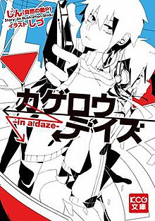
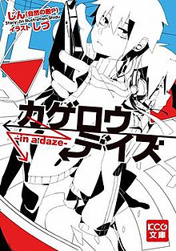

This chapter explains
A docotr met his favourite idol, Ai, and he found out she's pregnant. He latered died and reborned as one of Ai's chlid, and later found out that his twin sister also has a past life. Unfortunately, Ai died and the doctor decided to avenge Ai.
A girl from Mercury, Suletta Mercury , went to school for the first time with her Gundam, "Aerial". She met a girl named Miorine Rembran which is forced to marry the best Gundam pilot in the school, after meeting the best Gundam pilot in the school, Guel Jeturk. She decided to defeat Guel and became the best pilot in the school. She laters finds out that Aerial is a Gund-Arm, and founds out her mother's plan and who she is.
It's a story a girl with social anxiety called Hitori Gotoh. She is very good at the guitar, but she never had any friends until she met a drummer, Nijika Ijichi and she was invited to a band, "Kessoku band", and meets Ryo Yamada and Kita Ikuyo ( Kita appereas in Ep3 although she was shown in Ep1 ), and her life completely changed!
A man named Satoru, which died after getting stabbed and reincarnated whith two unique skills, "The Great Sage" and "Predator", he was able to kill monsters, eat them and obtain their abilities. He met the "Storm Dragon" Veldora, and they became friends, Veldora explained to Rimuru about stuff about this world and how he's sealed inside the cave where Satoru is born by the "hero". They named each other, Veldora named Satoru "Rimuru Tempest" and Rimuru named Veldora 'Veldora Tempest. Rimuru decided to free Veldora so he used Predator to eat him. He got out of the cave and his adventure starts!
It's about things that Rimuru and his friends do when they're not fighting.
The story takes place between s1 and s2. One day, Rimuru Tempest got a request from the Grand Master Yuuki Kagurazaka to help a B-rank adventeurer Paul to go to the Coleus Kingdom and also to help the princess Zenobia to cure her disease, and he was involed in a fight between the princes and demons!
A girl named Chisato is from a secret organization that has been protecting Japan for years, the "DA", there's a part called Lycoris and the members are all orphan girls that's trained to be assistain and protect Japan secertly. A girl from Lycoris, Takina, when she's on her mission, DA got hacked by a hacker "Walnut" and she did something dangerous to finish the mission, unfortunatley, she failed and was ordered to Tokyo to learn from the best Lycoris, which is Chisato. They work in the cafe "LycoReco" that's opened by Chisato and one of the teacher from DA Mika, they became friends through out the story and Takina founds out the secret of Chisato's heart.
A 18 year old teenager, Shintaro, that stayed inside his room spending his whole time on his computer the last 2 years with an AI girl, Ene. One day during the summer break, Shintaro's computer broke and was forced outside, when he just want to buy a new computer, he got into a terriorist attack in the mall, and with Ene's help he was able to save evreyone( in Shintaro's perspective, but in reliaty, his sister, Momo and a mystirious group "Mekakush-idan" helped him ), he was shot by the terriorists and woke up in the hospital, with Momo and the Mekakushi-dan members. Kano, Kido, Seto and Marry! They revieled their "Eyes abilities" and Momo also has one too. He was forced to join Mekakushi-dan to protect his sister and later finds out the secret of the Mekakushi-dan members and the dark truth about their Eye abilities that would put their lives into danger.
Think before you read the mangas/watch the anime or listen to the songs because it take a lot of effort to understand the whole story and to make a theory about some of the questions that the mangas, anime, and songs didn't answer.
This is the link to Oshi No Ko official website
https://ichigoproduction.com/This is the link to Gundam.Info
https://en.gundam.info/This is the link to the official website of Bocchi the Rock!
https://bocchi.rocks/This is the link to the wiki fandom to Slime isekai/Tensura
https://ten-sura-m.bn-ent.net/en/ https://www.google.ca/url?esrc=s&q=&rct=j&sa=U&url=https://tensura.fandom.com/wiki/Tensei_Shitara_Slime_Datta_Ken_Wiki&ved=2ahUKEwj62e-VqPSBAxW-hIkEHWPmDvwQFnoECAMQAg&usg=AOvVaw3nbLUpPd-WG6gEY_3l5F8RThis is the link to Slime isekai
This is the official website to Lycoris Recoil
https://lycoris-recoil.com/This is the link to the official website of Kagerou Daze/Kagerou Project/Mekakucity Actors
https://www.mekakucityactors.us/Here's some images of Oshi No Ko,Slime isekai/Tensura(The time I got Reincarnated as a Slime), Tensura Nikki(Tensura Diaries), Lycoris Recoil, Kagerou Daze/Kagerou Project/Mekakucity Actors
.jpg)
 

.jpg)
The adventure is over but life goes on for an elf mage just beginning to learn what living is all about. Elf mage Frieren and her courageous fellow adventurers have defeated the Demon King and brought peace to the land. But Frieren will long outlive the rest of her former party. How will she come to understand what life means to the people around her? Decades after their victory, the funeral of one her friends confronts Frieren with her own near immortality. Frieren sets out to fulfill the last wishes of her comrades and finds herself beginning a new adventure…
Upon graduating middle school, Rentarou Aijou manages to confess to the girl he loves. Unfortunately, he gets rejected, making it his 100th rejection in a row. Having experienced heartbreak after heartbreak, he goes to a matchmaking shrine and prays with the hope of finally getting a girlfriend in high school. Suddenly, the god of the shrine appears, promising Rentarou that he will meet one hundred soulmates in high school.
It will definatley include the "Tokyo Blade Arc" but the rest of the arcs are not so sure. It would PROBABLY come out in 2024 which is next year
It will come out in the spring of 2024 in Japan. Season3 will probably focus on the battle between Rimuru Tempest and his strongest oppoment, Hinata Sakaguchi and probably their relationship.
A new sequel of Lycoris Recoil have been confirmed, although it did not announced it will be a movie or season2, the story is likley going to be focused on the protagonists, Chisato Nishikigi and Takina Inoue.
It has been announced that the Bocchi the Rock movie is going to come out in 2024. The first one will be out in spring and the second one will be out in summer.
The mangaka of Oshi No Ko, Aka Akasaka is also the mangaka of Kaguya-sama: Love is War. Oshi No Ko was created by two mangakas.
There are light novels about the story. One of them is about before Suletta and Aerial went to school and one of them is around things that happened after ep4 and before ep5.
Bocchi the Rock is originally a four-panel manga. Bocchi the Rock main characters' names are from a real-life rock band Asian Kung-fu Generation.
One of the villains, Demon Lord Clayman is voiced by Takehito Koyasu, the person that voiced Dio Brando from Jojo's Bizzare Adventure. That Time I got reincarnated as a Slime Coleus's No Yume (Coleus's Dream) came out a few days ago a left with a huge hint about Luminous Valentine and the mystry black hair women (which I think is the Masked Hero aka Chloe Aubert/Chronoa).
Although the anime of That Time I got reincarnated as a Slime Diaries ended, the manga actually contiued.
Lycoris Recoil is actually an original anime. Most people watch Lycoris Recoil because they like to watch Chisato and Takina's relationship.
Kagerou Daze, Kagerou Project and Mekakucity Actors are actually in different cycles. Kagerou Daze is the story from one of the cycle where everyone was killed to another cycle. Mekakucity Actors is in another cycle that seems to have a good ending. It's origin is actulally songs that were created by Jin to tell a story. Some of the most famous ones are "Ayano's Theory of Happines", "Children Record" and "Tomei Answers".Personally I think "Ayano's Theory of Happiness" is the saddest. I also think that "Outer Science" is the best song in the whole album.